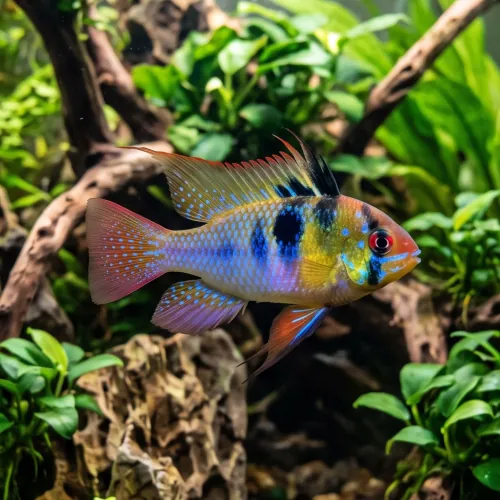

Nome popular principal
Ramirezi
Ramirezi, Ciclídeo-Anão-Ramirezi, Ramirezi-Comum
Ficha de peixe
Ciclídeos Anões
Um ciclídeo anão espetacular com cores vibrantes que traz elegância e mansidão para aquários bem plantados.

Nome popular principal
Ramirezi, Ciclídeo-Anão-Ramirezi, Ramirezi-Comum
Nome científico
Nome técnico essencial para taxonomia, cruzamento de manejo e referência editorial consistente.
Dificuldade de manejo
Use este nível como referência inicial, sempre considerando volume, estabilidade e compatibilidade do aquário.
Seção 1
Seção 2
Seções 4 a 6
Ramirezi tem hábito alimentar onívoro. Média. 1 a 2 vezes ao dia. Exige alimentos de alta qualidade, aceitando rações micro-extrusadas e suplementação constante com alimentos vivos ou congelados.
Fêmeas possuem o ventre avermelhado ou rosado e são ligeiramente menores que os machos. Tipo de reprodução: Ovíparo. Dificuldade de reprodução: Intermediário. O casal limpa uma superfície plana para a postura dos ovos e ambos compartilham os cuidados com a prole.
Alta. Substrato recomendado: Areia fina de rio. Necessidade de esconderijos: Média. Aprecia aquários densamente plantados com troncos, pedras lisas e substrato brando para que possa fuçar suavemente.
Seção 7
Possui longevidade relativamente curta em aquários e é bastante sensível ao acúmulo de nitrato e frio.
Seção 8
O Ramirezi necessita de água bem quente, com temperatura mantida preferencialmente entre 26°C e 29°C.
A fêmea apresenta uma mancha rosada ou avermelhada bem visível na região do ventre, além de ser um pouco menor.
Não, ele é um ciclídeo anão muito pacífico com outras espécies, tornando-se levemente territorial apenas durante a reprodução.